皆様こんにちは、System Center サポートチームの 石原 です。
今回は、System Center Operations Manager (SCOM) に管理パック (MP：Management Pack) をインポートすることにより監視機能を拡充する手順についてご紹介します。
管理パック (MP:Management Pack) 導入による監視機能の追加について
以前のブログ (SCOM 管理サーバー構築手順 ～ 全画面ショット付き | Japan System Center Support Blog) では SCOM 管理サーバー環境の構築手順を紹介しました。SCOM 管理サーバー環境の構築完了後、エージェントの展開などの前にまず最初に行う必要がある作業が管理パックの導入です。
SCOM には OS 種別やソフトウェアごとに『管理パック』というモジュールが存在していて、管理パックを導入することで初めて対象システムの監視が有効になります。
管理パックの一覧サイト Microsoft Management Packs - TechNet Articles - United States - TechNet Wiki
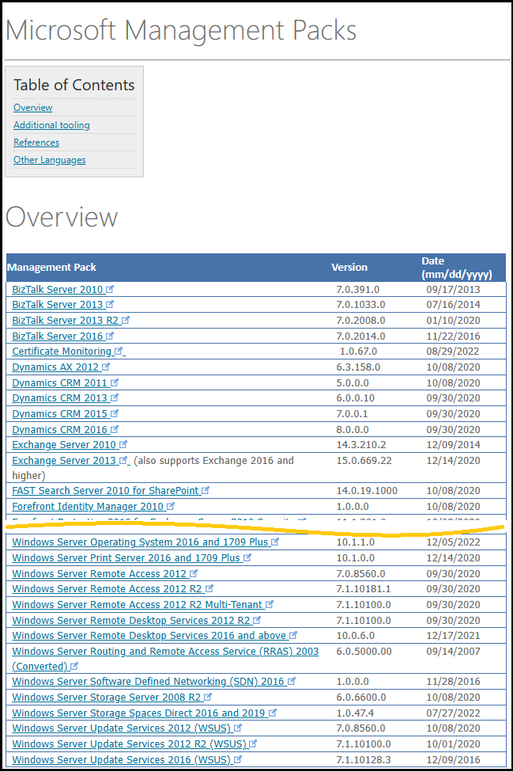
代表的な管理パックには以下のようなものがあります。
【管理パックの例】
・Windows Server の監視用管理パック ：System Center Management Pack for Windows Server Operating System
・Microsoft SQL Server の監視用管理パック ：Microsoft System Center MP for SQL Server
・Microsoft Adtive Directory の監視要管理パック：Microsoft System Center Management Pack for ADDS
SCOM 管理サーバーの構築時に導入される管理パックは、SCOM のサーバー機能の動作に必要な最小限の管理パックに限られていて、上に記載したような代表的な管理パックについても導入されていません。
※SCOM サーバーの構築時にインストールされる管理パックについては、以下のサイトをご参照ください。
Operations Manager と一緒にインストールされる管理パック | Microsoft Learn
つまり、SCOM で適切な監視を開始するためには、対応する管理パックを導入する必要があります。
管理パックの導入は、以下の手順で進めます。
① 事前準備１：OperationsManager データベースのファイルサイズの拡張
② 事前準備２：レポート機能用データベースの設定変更 (※レポート機能をインストールした場合のみ)
③ 管理パックの導入
① 事前準備１：OperationsManager データベースのファイルサイズの拡張
SCOM 管理サーバーのインストール時に OperationsManager と OperationsManagerDW の２つのデータベースが作成されます。
これらのデータベースは、インストール ウィザードに沿ってインストールを行うと、既定で以下の設定になります。
| データベース名 | ファイル | 初期サイズ (MB) | 自動拡張 | 用途 |
|---|---|---|---|---|
| OperationsManager | OperationsManager.mdf | 1,000 | 無し | 主に短期データを保管するデータベース Operations Manager データベース | Microsoft Learn |
| OperationsManager.ldf | 500 | 無し | ||
| OperationsManagerDW | OperationsManagerDW.mdf | 1,000 | あり。10 MB 単位 | 主に長期データを保管するデータベース Operations Manager データウェアハウス データベース | Microsoft Learn |
| OperationsManagerDW.ldf | 500 | あり。10 MB 単位 |
SCOM に管理パックを導入すると、管理パックに包含されるモジュール (監視を定義する xml ファイルなど) がデータベースに保管されます。大部分の管理パックは数 MB 程度以内のファイルサイズですが、中には 100 MB を超える管理パックも存在します。
[OperationsManager] データベースは 自動拡張が [なし] の設定のため、多数の管理パックを導入する場合、データベースの使用量が増加してファイルサイズを圧迫することになります。そのため、管理パックの導入の前に予めデータベースのファイルサイズを拡大しておく必要があります。
■ データベースファイルの拡張手順
ファイルサイズの拡張は、SQL Server Management Studio から実施できます。
1. SQL Server Management Studio にて、データベース管理者アカウントで SCOM データベースに接続します。
2. [データベース] -> [OperationsManager] を選択して、右クリックメニューの [プロパティ] をクリックします。
3. データベースのプロパティ画面にて [File] を開きます。
4. サイズを拡大して、OK ボタンをクリックします。
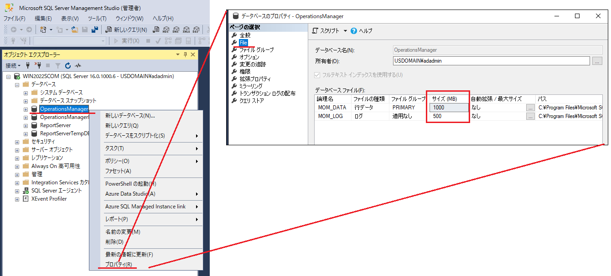
※ 拡張するサイズの目安について
データベースサーバーのディスクサイズに余裕がある場合は OperationsManager.mdf を 10,000 MB、OperationsManager.ldf を 5,000 MB程度に拡大することを推奨します。このサイズであれば、将来に渡って管理パックによるディスクサイズの圧迫は懸念する必要がなくなります。ただし、[OperationsManager] データベースには、管理パックデータ以外にもエージェントが収集した短期データなどが保管されますので、実際には環境ごとにチューニングが必要です。
② 事前準備２：レポート機能用データベースの設定変更 (※レポート機能をインストールした場合のみ)
レポート機能をインストールした場合、管理パックに含まれるレポートの定義情報がレポートデータベースに展開されます。SQL Server レポーティングサービスの既定の設定を変更して、正しくコンテンツが展開できるようにする必要があります。
※本設定については、以下のユーザーマニュアルサイトもご参照ください。
Operations Manager レポートの展開に失敗する - Operations Manager | Microsoft Learn
レポートデータベースの設定変更の手順は以下の通りです。
1. SQL Server Management Studio (SSMS) を起動し、SCOM が使用するレポートサーバーインスタンスに接続します。
- サーバーの種類: Reporting Services
- サーバー名: <SSRS インスタンスが存在するサーバー名><SSRS インスタンス名>
※ SSRS の既定のインスタンス名は “SSRS” です。SSRS インスタンス名は、[スタート] メニューより
[Microsoft SQL Server Reporting Services] -> [Report Server Configuration Manager] を開き
[レポートサーバーの構成の接続] の [レポート サーバー インスタンス] の名称にて確認できます。
- 認証、ユーザー名、パスワード: SSRS 側で設定いただいた認証方式およびパスワード
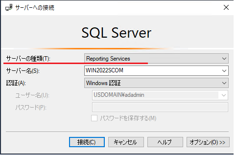
2. レポートサーバー名を右クリックし、[ プロパティ] を選択して、[ 詳細設定] を選択します。
3. AllowedResourceExtensionsForUploadの設定を見つけ、 設定値に *.* を入力して、[OK] をクリックします。
【設定箇所】
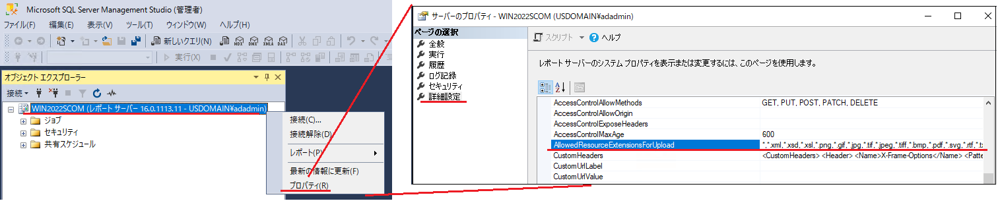【変更後の値】
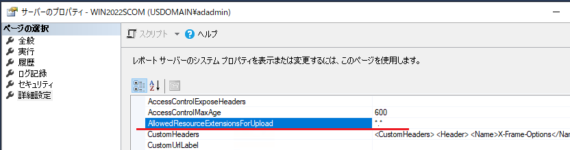
4. SSRS を以下手順で再起動します。
- Reporting Services 構成ツールを起動して、レポート サーバーに接続します。
- [レポート サーバーの状態] ページで [停止] をクリックし、その後 [開始] を選択します。
③ 管理パックの導入
事前準備が完了したら、いよいよ管理パックの導入です。
管理パックの導入方法には、３つの方法があります。
１）SCOM 管理コンソールの [更新プログラムと推奨機能] にて推奨管理パックを導入
２）SCOM 管理コンソールにて、カタログから管理パックをダウンロードして導入
３）管理パック一覧サイトから選択した管理パックを導入
今回は、基本的な管理パックを [更新プログラムと推奨機能] にて導入して、追加の管理パックをカタログからダウンロードして導入した後、最後に一覧サイトからダウンロードした管理パックを追加導入するシナリオで手順を説明します。
- SCOM コンソールにログインして、画面左下ペインの [管理] をクリックして、[管理] 画面を開きます。
- [管理] -> [管理パック] -> [更新プログラムと推奨機能] をクリックします。
- 特定の管理パックを選択して [管理パックを取得] をクリックするか、[すべての管理パックを取得] をクリックします。
今回の例では [すべての管理パックを取得] をクリックしました。
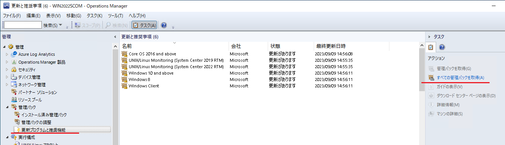 - [管理パックのインポート] 画面にて [インストール] ボタンをクリックして、管理パックをインポートします。
※ 注意事項
① 管理パックの中には、日本語の言語パックが存在するものがありますが、[更新プログラムと推奨機能] では言語パックは選択されません。日本語の言語パックが必要な場合は、あとで追加で導入する必要があります。
② [更新プログラムと推奨機能] では、最初、多数の管理パックが表示されます。管理パックには依存関係 (導入の順番) が存在するものがあるため、一部の管理パックの導入が失敗することがありますが、失敗した場合は、再度、[すべての管理パックを取得] を行うことで、依存関係を満たした管理パックの導入が成功するようになりますので、何度か本作業を繰り返してください。
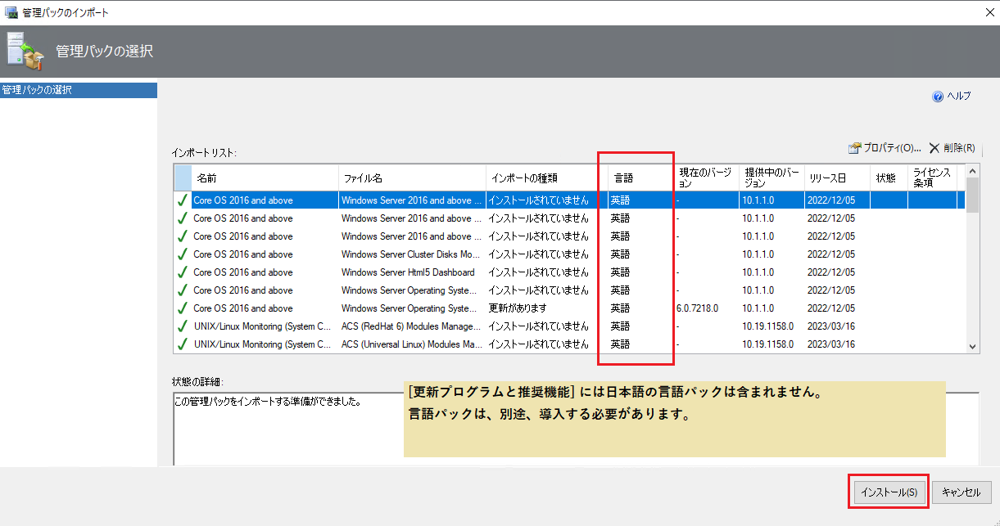
これらの管理パックは、Microsoft のカタログサイトから取得して導入することができます。
手順は以下の通りです。
1. SCOM コンソールにログインして、画面左下ペインの [管理] をクリックして、[管理] 画面を開きます。
2. 右クリックメニューにて [管理パックのインポート] をクリックします。
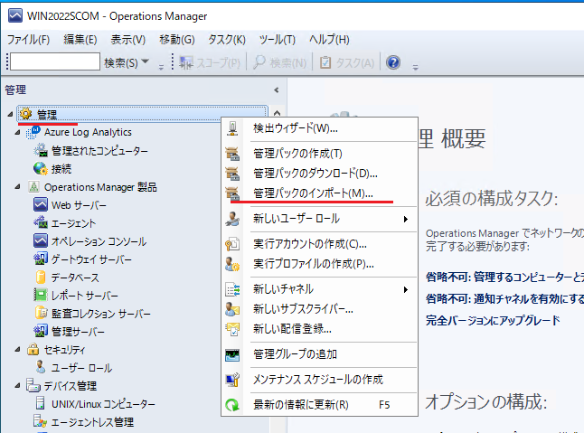
3. [管理パックのインポート] 画面にて [追加] -> [カタログから追加する] をクリックします。
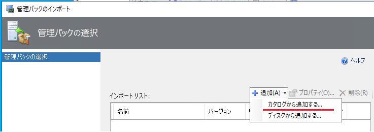
4. [検索] を実行することでカタログからインポート可能な管理パックが表示されます。
必要な管理パックを選択して [追加] ボタンをクリックします。
例１）Active Directory Domain Service の管理パック
[Windows Server] - [Active Directory Domain Services 2016 and above]
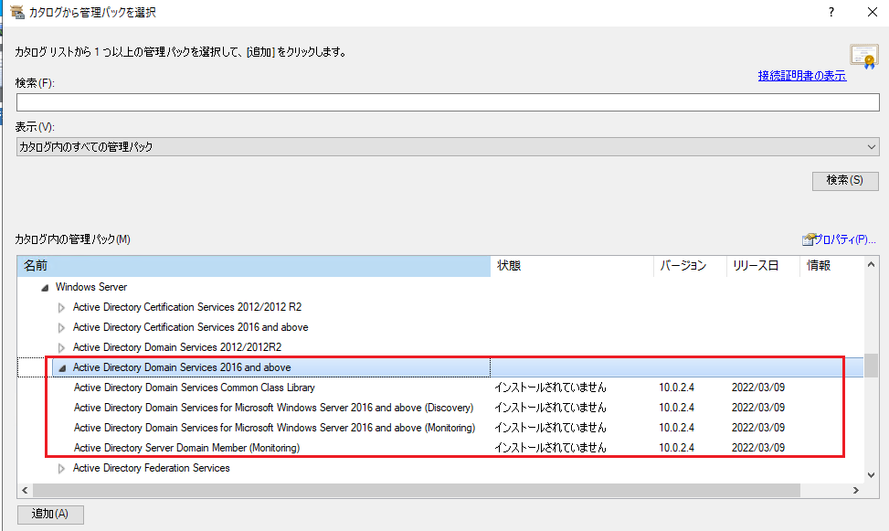
例２）Windows Server 1026 and above 用の日本語言語パック
[Windows Server] - [Core OS 2016 and above] - [Japanese]
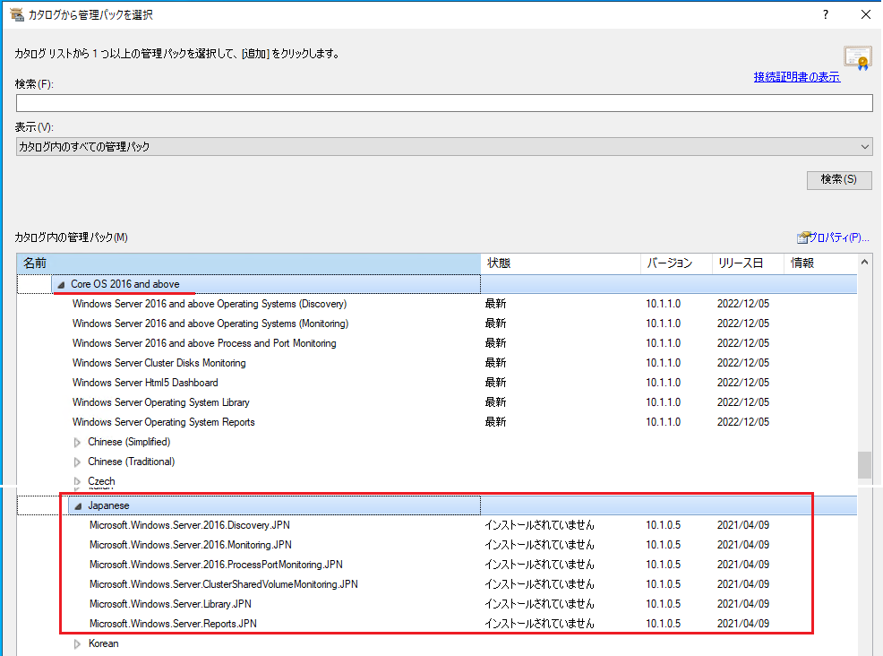
5. 管理パックの追加が完了したら [OK] ボタン -> [インストール] ボタンをクリックして導入します。
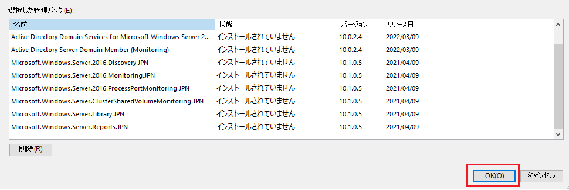
ここでは、SQL Server の管理パックの導入を例に説明します。
- 管理パックの一覧サイト (Microsoft Management Packs - TechNet Articles - United States (English) - TechNet Wiki) にアクセスします。
- SQL Server 用管理パックのリンク (Download Microsoft System Center MP for SQL Server from Official Microsoft Download Center) をクリックします。
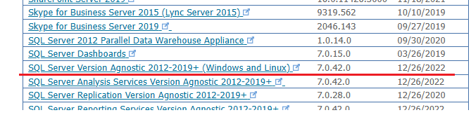 - [Download] をクリックします。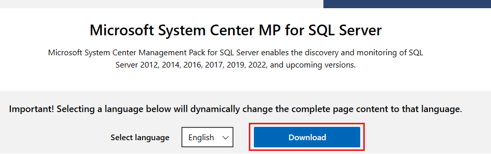
- 必要なファイルを選択して [Download] をクリックします。
※ 重要
[SQLServerMPWorkflowList.pdf] は、SQL Server 用管理パックのマニュアルです。管理パックの導入手順、システム要件、サポート対象、含まれるルールやモニター、ビューなどの情報を確認できます。多くの管理パックは、ダウンロードページにてマニュアルを取得することができます。
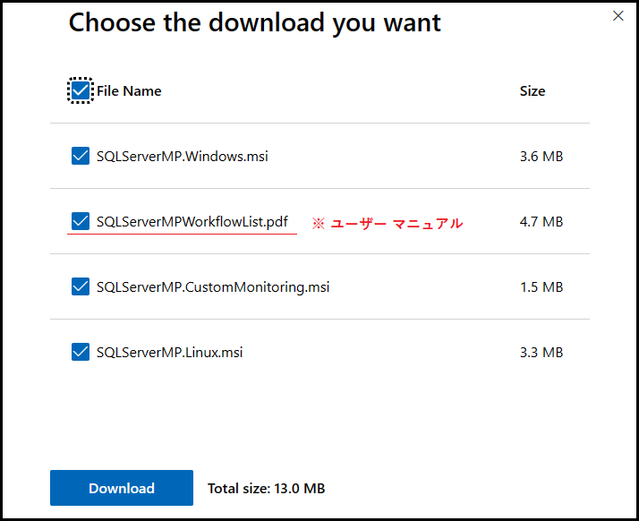 - SCOM 管理サーバー内に msi ファイルをコピーして、管理者で実行します。
ローカルディスクに管理パック ファイルが解凍されます。
例）SQLServerMP.Windows.msi を実行して解凍した管理パックファイル
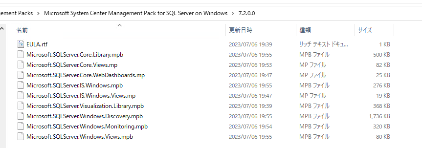 - SCOM コンソールにログインして、画面左下ペインの [管理] をクリックして、[管理] 画面を開きます。
- 右クリックメニューにて [管理パックのインポート] をクリックします。
- [管理パックのインポート] 画面にて [追加] -> [ディスクから追加する] をクリックします。
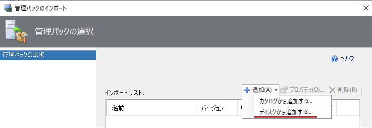 - 解凍した管理パックファイルをすべて選択して [インストール] ボタンをクリックします。
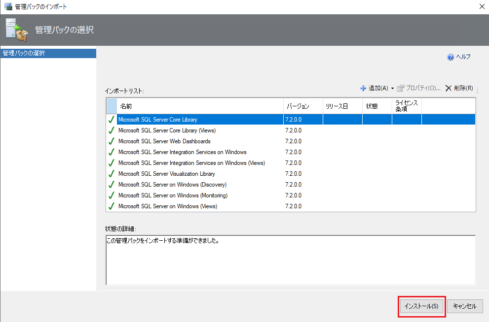
以上により管理パックの導入作業は完了です。
管理パックの導入確認
管理パックの導入が完了すると、モニターやルールに該当する OS やソフトウェアの設定が追加されたことが確認できます。
例）モニター画面：Active Diretory 監視用のモニター
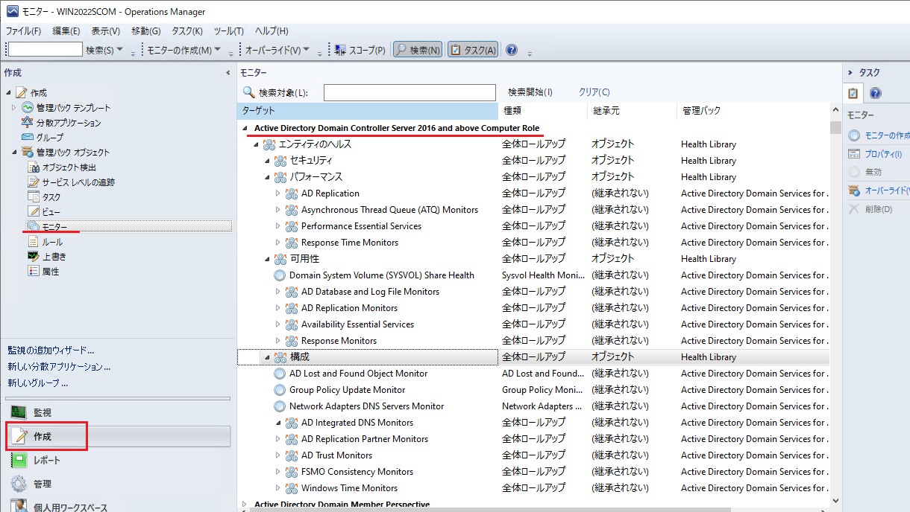
収集したデータを確認するためのビューが追加されたことが確認できます。
例）監視画面：Active Diretory に関する収集データを確認するビュー
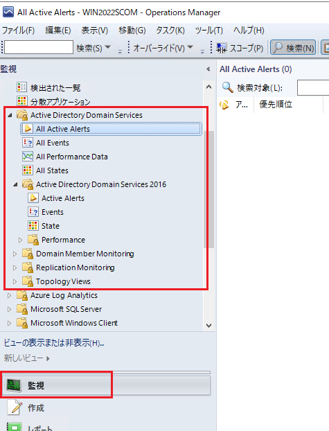
レポートが追加されたことも確認できます。
例）レポート画面：Active Diretory に関する収集データを確認するレポート
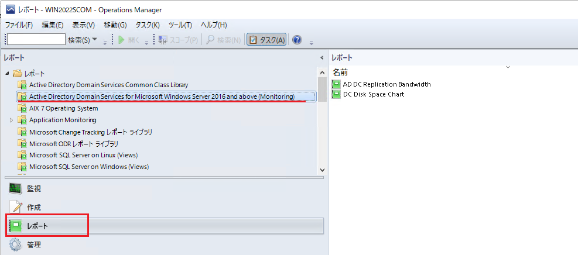
以上により、監視の準備が完了しましたので、監視対象サーバーにエージェントを展開して、SCOM による監視ができるようになります。
※本情報の内容（添付文書、リンク先などを含む）は、作成日時点でのものであり、予告なく変更される場合があります。